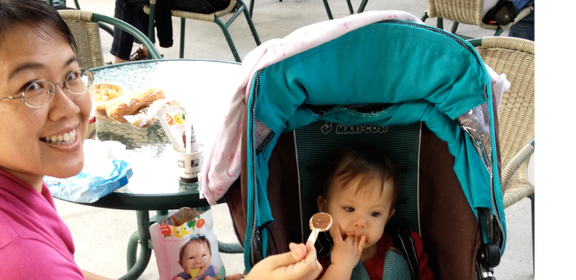

Morbi interdum mollis sapien. Sed ac risus. Phasellus lacinia, magna lorem ullamcorper laoreet, lectus arcu.
Babyfood
I have had a dream since a long time ago: to turn Dr. Danma’s baby food puree into a convenient bag. I remember that I had to spend more than 3 hours in the kitchen every week to prepare a week’s worth of baby food, and it was very inconvenient to travel with the food. With this motivation, it was planned a few years ago, and after 18 months, the dream finally came true. This product is called "babyfood" (babyfood), which has another blessing meaning Baby.
Ut convallis, sem sit amet interdum consectetuer, odio augue aliquam leo, nec dapibus tortor nibh sed.
Suspendisse mauris. Fusce accumsan mollis eros. Pellentesque a diam sit amet mi ullamcorper vehicula.
"貝比福的送貨速度超級快的，昨天下午才訂貨，今天早上就送到了，效率真的超級好的，貝比福對於我們要出門的媽媽真的很方便，只要帶個幾包，小BABY的肚子就不怕餓了，大大推薦貝比福！！"
Mommy Elisa
"我覺得貝比福味道很好，有時寶寶吃不完，我和先生都會搶著吃。目前我們都要訂第三箱了，有時太忙或香蕉不够熟而不能做食物泥時，就會先餵貝比福，所以家裡一直都有幾包貝比福備用。 若擔心寶寶不喜歡吃貝比福, 建議可以先買幾包試試看！"
貝比福MOM
"我們很堅持給寶寶吃食物泥，但是帶自己做的食物泥難免會比較累，就享受不到度假的樂趣。有了貝比福以後，每次帶寶寶出遠門都不用再擔心食物泥的問題。貝比福加熱方便，無論在哪裡我們都不再擔心如何保存與加熱，真的讓我們輕鬆多了！"
一位爸爸
TODO: Instructions in English how to order the food and link to taiwanbaby.com